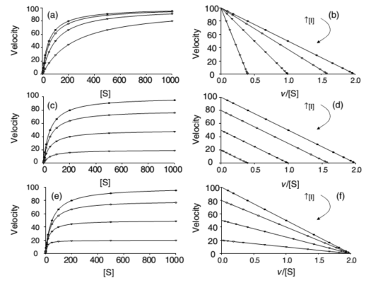
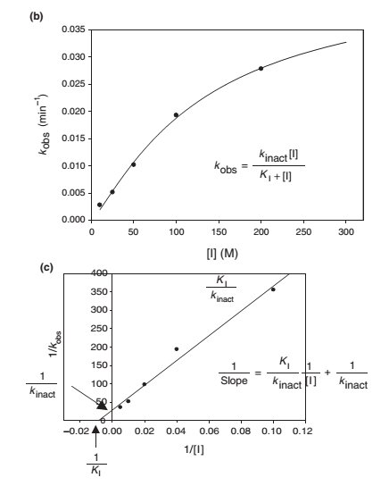

Chapter 5 후보 물질의 대사 억제 특성 평가
이소진
5.1 서론
이 장에서는 개발하는 약물이 과연 대사 억제제(inhibitor) 역할을 하는 약물인지 확인하고, 어떤 대사억제(inhibition) 특성을 가지는지 확인하는 방법을 살펴보기로 한다. Inhibition의 종류는 크게 두가지로 구분되며, 이는 reversible inhibition 과 time-dependent inhibition으로 나뉜다. 각각의 inhibition 종류에 따른 inhibition assay 및 실험 방법들과 이를 통해 얻어지는 핵심 정보들(i.e. inhibition type, inhibition parameters)이 무엇인지 알아보자. 그리고, 그 결과를 해석하는 방법 및 활용(i.e. DDI prediction)에 대해 살펴보겠다.
5.2 신약 개발 주기 안에서의 in vitro inhibition assay의 중요성/활용/위치
DDI 평가는 중요하며, 특히 여러 종류의 약물을 장기간 병용 투약하는 만성질환을 가진 환자에서 눈여겨 보아야 한다. Inhibitor 역할을 하는 약물은 victim drug 와 병용투여시 victim drug의 체내 약물 농도를 높게 만들고, 이에 따른 이상반응이나 독성이 나타날 수 있다. 따라서 후보물질의 대사 억제 특성 평가는 환자의 안전한 약물 치료를 위해 반드시 선행적으로 수행되어야 하는 부분이다.

그림 5.1: Perpetrator(inhibitor 또는 inducer) 와 victim drug 병용투여 시의 약물농도
Victim (substrate): Drug whose PK is affected,
Perpetrator: Drug that is affecting PK of victim
Inhibition 은 크게 두 종류로 나뉘어 지며, 이는 reversible inhibition 과 time-dependent inhibition이다. Reversible inhibition 은 또 한 번 competitive, noncompetitive, 그리고 uncompetitive 로 세분화할 수 있다. 각 종류 별 어떠한 inhibitor 로써 약물이 역할을 하는지 그리고 얼마나 그 역할을 하는지에 대하여 다양한 확인 법 및 assay를 통해 확인할 수 있고, 우리는 inhibition 과 관련된 parameter값을 수치화 하여 얻을 수 있다. 이는 DDI prediction을 위해 사용되며, DDI prediction 시 다양한 방법(static model, mechanistic static model, 그리고/또는 PBPK model)을 통해 inhibition parameter 값들을 적용하고 궁극적으로 DDI prediction에 사용한다.
In vitro 정보를 기반으로 한 DDI 평가는 In vitro ADME study 내에서 metabolism study에 해당하는 부분으로, metabolism study 범주 내에는 DDI 평가 외에도 metabolic stability test, metabolite profiling, 그리고 CYP isozyme profiling 등이 있다. 이와 같은 metabolic DDI 평가에는Cytochrome P450 inhibition 평가, induction 평가 및 activation/suppression 평가가 포함된다.
신약개발 주기에서 in vitro DDI 평가, 특히 inhibition 평가는 언제 이루어 지는지 알아보자. In vitro inhibition assay는 drug discovery 단계에서부터 수행되어야 한다. Drug discovery의 lead optimization 과정에서 수많은 약물 후보를 기반으로 개발약물이 inhibitor 인지 대규모로 screening 하는 과정을 거친다(i.e. 일반적으로 combined approach를 사용하여inhibition 평가하며, potent 한 TDI는 개발에서 제외하는 전략을 많이 취함). 이후에 drug development 단계로 와서 선택된 몇 개의 lead compound에 대해서는 보다 더 구체적인 정보를 얻기 위한 inhibition assay를 진행해야 한다. 임상 시험에 가까워질수록 in vitro inhibition assay 들은 GLP 와 비슷한 수준에서 수행되어져야 한다. 이와 같은 약물개발 주기에서의 in vitro 정보를 활용한 DDI 평가는 FDA 가이던스와 EMA 가이드 라인에서도 추천되어 진다.

그림 5.2: 신약 개발 주기에 따른 in vitro DDI 평가
5.3 대사 억제 작용 메커니즘
FDA에서 확인하기를 권고하는 주요 CYP isoform 은 7가지이며, 이는 아래와 같다:
CYP1A2, CYP2B6, CYP2C8, CYP2C9, CYP2C19, CYP2D6, CYP3A
대사 억제 작용의 종류는 크게 두가지로 나눌 수 있으며, 이는 reversible inhibition 과 mechanism-based inhibition이다. Reversible inhibition 은 direct inhibition이라고도 불리우며, inhibitor 와 enzyme이 covalent 하게 결합한 경우로, 빠른 시간 내에 dissociation 이 일어난다. 그리고 바로 enzyme activity 가 restore 된다. Reversible inhibition 은 inhibitor 와 enzyme의 결합 양상에 따라 여러 종류로 아래와 같이 세분화될 수 있다:
- Competitive inhibition: inhibitor 와 substrate 이 동일한 active binding site를 놓고 경쟁하는 경우이다. Inhibitor 와 enzyme 이 결합하는 경우 더 이상 기존 enzyme은 반응하지 않는다. Inhibitor의 효과가 Km에 반영되어 있으며 (Vmax 값은 동일), inhibitor 농도가 증가할수록 Km 값이 증가한다.
- Noncompetitive inhibition: inhibitor 가 free enzyme 과 결합하며, enzyme + substrate complex 와도 결합이 가능하다. 이 경우, inhibitor 농도가 증가할수록 Vmax는 감소하고 Km 은 그대로이다.
- Uncompetitive inhibition: inhibitor 가 enzyme + substrate complex 에만 결합이 가능하다. 약물 대사 반응에서 흔히 관측되지 않는 inhibition 종류이며, inhibitor 농도가 증가할수록 Vmax, Km 이 모두 감소한다.
Mechanism-based inhibition (MBI)은 흔히 time-dependent inhibition (TDI)라고도 불리우나, TDI 이 조금 더 큰 범주라고 할 수 있다. TDI은 preincubation 시간을 거치면서 inhibition potency 가 더 좋아지는 경우를 일컬으며, MBI는 TDI의 한 종류로 볼 수 있다. MBI에서는 inhibitor 와 enzyme 이 결합하여 reactive metabolite을 생성하고, enzyme 이 activity를 잃고 inactive 한 상태로 변한다. 따라서 이를 irreversible inhibition이라고도 부른다.
5.4 대사 억제 특성 평가 실험 (in vitro inhibition assay)
후보물질의 대사 억제 특성을 평가하기 위해서 각 inhibition 종류 (reversible vs. time-dependent inhibition)에 따라 핵심 in vitro assay를 수행하여 핵심 inhibition parameter를 구해야 한다.
우선, reversible inhibition의 경우 핵심 assay 로는 IC50 와 Ki를 결정하는 시험들이 있다. Time-dependent inhibition assay 로는 Single point assay, IC50 shift assay, 그리고 Kinact, KI를 결정하는 assay 가 주요하다(IC50: drug concentration achieving 50% of maximal reversible inhibition, Ki: reversible inhibition constant, Kinact: drug concentration achieving 50% of maximal inhibition of TDI, KI: TDI constant).
이와 같은 핵심 inhibition assay를 수행하기 전에 무엇보다 우선적으로 수행되어야 하는 것은 substrate saturation experiment(또는 metabolic stability test)이다. 이를 통해 substrate의 enzyme kinetic parameter(Km, Vmax)를 구할 수 있고 특히, 이때 얻은 Km 값을 참고하여 in vitro inhibition assay에서 사용할 적합한 substrate의 농도를 설정할 수 있다(Vmax: maximum reaction rate, Km: substrate concentration at half-maximum reaction rate (velocity))
그림 5.3: Typical example of substrate saturation experiment results for enzyme kinetic parameters (Vmax, Km): Reaction rate vs. substrate concentration. Vmax: maximum reaction rate, Km: substrate concentration at half-maximum reaction rate (velocity)
5.4.1 Reversible inhibition assay
5.4.1.1 CYP inhibition assay for IC50 determination
FDA의 가이던스에 따라 7종류의 주요 CYP isoform에 대하여 평가를 수행해야한다.
Reversible inhibition을 하는지 평가하기 위해 우선 IC50를 구해야 한다. 이는CYP inhibition assay (IC50)로 구할 수 있다. 이때의 IC50는 50% inhibition을 나타낸 inhibitor의 농도를 의미하며, 다양한 test compound를 재료로 inhibitor 농도에서 metabolite formation을 측정하여, 궁극적으로 inhibitor 농도에 따라 metabolite formation 이 얼마나 inhibit 됐는지를 plotting 확인하여 IC50를 구한다.
Inhibitor, substrate 그리고 HLM을 preincubate 시킨 후, cofactor 인 NADPH를 넣고 incubation을 거친다. 각 inhibitor의 농도에서 metabolite formation을 LC-MS/MS를 통해 관측한다.
IC50 값은 extrinsic constant 로 lab-to-lab variability 가 존재하고, 재생산하기 어려운 값일 수 있다. Substrate의 종류, 농도 그리고 incubation condition에 따라 달라질 수 있다. 이때 얻어지는 IC50 값은 각각의 CYP isoform에 대해서 얻을 수 있으며, IC50 값의 해석은 아래와 같다.

그림 5.4: Metabolite formation depending on the various inhibitor concentration

그림 5.5: (ref:05-05)
Metabolite formation depending on the various inhibitor concentration Interpretation of IC50 values
5.4.1.2 CYP inhibition assay for Ki determination
앞에 소개된 IC50 값을 실험을 통해 구한 후 이를 활용하여 각 CYP isoform 별로 Ki 값을 구할 수 있다. 미리 산출된 IC50 값은 실험에 적합한 inhibitor 농도를 구하기 위해 사용되며, 산출된 IC50 농도와 근접하게 inhibitor 농도를 설정한다.
실험은 다양한 substrate 과 inhibitor 농도로 수행된다. 아래와 같이 다양한 inhibitor 농도에 따른 reaction rate vs. substrate concentration 그래프를 얻을 수 있다(그림 5). 그래프의 양상을 통해 reversible inhibition 종류를 알아낼 수 있다(i.e. competitive, noncompetitive, uncompetitive, or mixed). Ki를 구하는 방법은 여러가지로, regression을 통해서 모델 식에 fitting 한 후 Ki를 값을 계산하여 얻을 수 있다(수식1). 또는, 얻어진 IC50 값을 기반으로 간단하게 계산하는 방법이 있다(수식 2). First-order kinetic 이 가장 잘 관측되는 구간은 substrate 농도가 Km 값과 비슷하거나 작을 때이며, 따라서 대부분의 경우 Ki 값은 IC50 와 유사하거나, IC50/2 로 계산할 수 있다(수식 2).
Ki 값은 intrinsic constant 로 inhibitor 가 enzyme 과 결합하는 affinity를 나타낸다. Ki 값은 inhibition potency를 나타낸다. 이는 특정 inhibitor 와 enzyme의 고유한 값이며, 어떠한 substrate을 사용하던지 달라지지 않는다. Ki 값은 IC50 보다 재생산하기 쉬운 값으로, in vivo 단계에서의 DDI 평가가 필요할지 알려주는 더 정확한 값이라고 할 수 있다.
\(A\)

그림 5. Reaction rate vs. substrate concentration
\(A\) (b) and (B) plot: Y-intercept = Vmax, Slope = Km
수식 . Rate equations for different inhibition model types
수식 . Estimation of Ki value based on IC50 value
5.4.2 Time-dependent inhibition assay
TDI는 reversible inhibition 보다 안전성 측면에서 더 심각한 결과를 초래할 수 있는 inhibition으로 in vitro inhibition assay 단계에서 potent TDI 로 평가될 경우, 약물 개발이 중단되기도 하며, 설령 허가가 된다고 해도 해당 약물 사용시 강력한 제제가 동반되는 경우가 많다. 따라서 최대한 빠르게 drug discovery 단계에서 TDI 여부를 탐색하기를 추천한다. 일반적으로 수행되는 TDI assay는 아래와 같다:
Common practice to address TDI (tiered approach):
- Single point assay: reversible CYP inhibition assay 와 동시에 병행하여 진행할 수 있으나, reversible assay를 먼저 수행하기를 추천한다. ADME assay 초기 단계에 약물 후보가 많을 때 진행한다.
- IC50 shift assay: 약물 개발 주기 뒷 단계에 진행되는 경우가 많으며, 더 많은 정보를 획득할 수 있다. 3. 실험을 계획하는데 결과가 활용된다.
- New thorough inactivation studies (Kinact, KI): kinetic study 로 TDI parameter를 구할 수 있다.
CYP TDI single point assay
In vitro ADME assay 초기의 단계에 TDI potential을 screening 하기 위해 수행된다. 단일의 inhibitor 농도를 가지고 실험하며, 고농도의 inhibitor 농도(reversible inhibition assay 에서의 최고농도)와 substrate 농도(일반적으로 Km 값의 5배)를 가지고 진행한다(reversible inhibition을 최소화하기 위함).
Preincubation을 거쳐(inhibitor + cofactor (NADPH) in HLM), substrate을 투여한 후 incubation을 수행한다.
후보 약물이 TDI 일 경우, enzyme의 active site에 결합하게 된다. 대사체가 생성되는 반응이 측정되고, 수식에 따라 percent inhibition(%) 이 계산된다(수식3).

수식 . Percent inhibition calculation for single point assay in TDI
CYP TDI assay for IC50 shift determination
ADME assay 후기 단계에서 수행되며 reversible inhibition 과 irreversible inhibition을 구분할 수 있도록 도와준다. 다양한 inhibitor 농도로 실험을 진행하며, 30분 정도의 preincubation period를 거치고 이 때 NADPH를 포함하는 경우와 포함하지 않는 경우의 결과를 그래프 화하여 IC50 값을 구하고 그 변화를 확인한다(그림 6).
이때 얻어지는 그래프는 %CYP activity vs. inhibitor concentration이며, NADPH를 포함하여 preincubation 한 경우의 IC50 가 약 1.5배 작아지면(left shift of IC50), 해당 약물은 TDI을 나타내는 것으로 해석한다. 이와 같은 IC50 값의 left shift는 preincubation을 통해 CYP activity를 inhibition하는 potency 가 커짐을 의미한다.
그림 . Example of IC50 shift profile of %CYP activity vs. inhibitor concentration plus/minus NADPH during preincubation period
CYP TDI assay for kinact/KI determination
Kinact 와 KI를 구하는 실험을 수행하여 clinical interaction study 가 필요한지 결정하는데 참고할 수 있다. 다양한 inhibitor 농도를 가지고 preincubation time을 다양하게 설정하여 실험을 진행한다 (Kinact: Maximal rate of enzyme inactivation at saturating concentration of inhibitor (/min), KI: Concentration of inhibitor which gives half the maximal rate of inactivation (uM)). 이를 통해 다양한 inhibitor 농도에 따른 %CYP activity remaining vs. preincubation time 그래프 얻고, 이를 해당 그래프의 -slope vs. inhibitor 농도로 변환한다(그림 7 (a), (b)). 변환한 그래프를 가지고 수식에 fitting 하여 non-linear regression을 통해 kinetic constant for TDI 라고 일컬어 지는 Kinact 와 KI를 구할 수 있다(수식 4 (a)). 또는 Linewever-Burk plot을 활용하여 각 파라미터의 역수를 취해 그래프화하고 X, Y-intercept 로 1/KI, 1/Kinact 를 구할 수 있다(수식 4 (b)).
\(a\)

\(b\)

그림 . Example of (a) %CYP activity remaining vs. preincubation time, (b) -slope (of (a) graph) vs. inhibitor concentration

수식 . (a) Observed rate (Kobs) model, (b) Linewever-Burk plot
5.5 In vitro inhibition parameter의 활용
위에 소개된 다양한 In vitro inhibition assay를 통해 우리는 결국 inhibition parameter 값들을 산출하였다. 이 값들을 활용하여 각 inhibition type별 model별로 수식에 적용하여, 각 CYP의 inhibition 정도를 나타내는 R 값을 계산할 수 있다(표 2. static model).
또한, in vitro inhibition parameter 값들과 그 외의 실험값 및 문헌값을 기반으로 mechanistic static model 또는 PBPK model을 활용하여 여러 CYP의 영향을 종합적으로 고려한, inhibitor를 substrate 과 병용 투여하는 경우의, 약물 노출 값의 변화(fold-change in AUC)를 구할 수 있다(표2, 수식 5).
이와 같이 in vitro inhibition assay에서 얻은 결과는 약물의 inhibition 능력을 수치화 하여 나타내는 핵심 inhibition parameter 로써, 임상 시험 돌입 전 DDI 예측 및 평가에 있어 반드시 필요한 값들이며, 이 값들을 사용하여DDI 예측이 가능하다. 이 과정을 통해 DDI 로 발생하는 임상에서의 위험성을 최대로 낮출 수 있다.

표 . Various DDI prediction models for reversible inhibition and time-dependent inhibition
\[ AUCR = \frac{AUC_i}{AUC} = \frac{CLu_{int}}{CLu_{int,i}} = \frac{1}{\sum_{j=1}^{n} (\frac{fm_{CYPj}}{1+\frac{[I]}{K_i}}) + (1-\sum_{j=1}^{n}fm_{CYPj})} \]
수식 5. AUC fold-change calculation for mechanistic static model
References
Wang, Binghe. Drug-drug interactions in pharmaceutical development. Vol. 6. John Wiley & Sons, 2008.
Cayen, Mitchell N., ed. Early drug development: strategies and routes to first-in-human trials. John Wiley & Sons, 2011.
Grimm, Scott W., et al. "The conduct of in vitro studies to address time-dependent inhibition of drug-metabolizing enzymes: a perspective of the pharmaceutical research and manufacturers of America." Drug Metabolism and Disposition 37.7 (2009): 1355-1370.